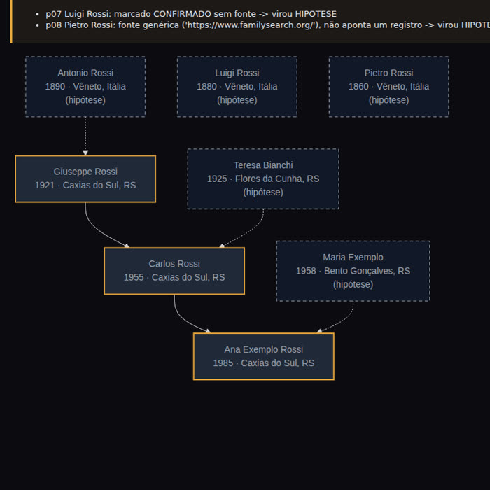

O vídeo viral promete árvore completa, parentes desconhecidos e até cidadania. Uma parte funciona. A outra é onde a IA alucina.
Este é um guia gratuito para montar a árvore genealógica da sua família usando um chat de IA (ChatGPT, Claude, Gemini) do jeito certo. Ele explica o que o vídeo viral "o ChatGPT acha seus parentes" acerta e onde a IA inventa pessoas. Traz 8 prompts prontos que obrigam a IA a mostrar a prova, a lista de acervos onde pesquisar de verdade e um checklist para conferir cada nome. Para usar, basta um chat de IA e, se quiser a árvore desenhada, Python 3.
Quatro pedidos ao chat e uma promessa de cidadania. Veja o que se sustenta e por quê.
| Promessa | Funciona? | Por quê |
|---|---|---|
| 1. "Me pergunta tudo e monta minha árvore inicial" | ✅ Sim | A IA só organiza o que você contou. Não há o que inventar. |
| 2. "Conta a história da minha linhagem pelo sobrenome" | ⚠️ Meia verdade | A origem do sobrenome é genérica. Mesmo sobrenome não é mesma família. |
| 3. "Pesquise registros e ache parentes que eu não tenho" | ❌ Inventa | As bases boas pedem login ou são pagas, e muito registro brasileiro não está indexado na internet. Com nomes comuns, a IA junta homônimos (pessoas diferentes com o mesmo nome) e preenche os buracos com gente plausível. "Nomes que você nunca ouviu falar" é justamente o perigo. |
| 4. "Monta a árvore visual completa" | ✅ Desenha | Mas o desenho não deixa verdadeiros os nomes do passo 3. |
| + "Você vai encontrar uma cidadania" | ❌ Exagero | Cidadania se prova com certidões. E as regras ficaram mais duras: a Itália limitou a cidadania por descendência em 2025 (Lei 74/2025), e Portugal mudou a lei da nacionalidade em 2025–2026, com partes questionadas no Tribunal Constitucional. Informação conferida em novembro de 2026: confirme no consulado. |
Um modelo de linguagem escreve o texto mais provável, não o mais verdadeiro. Sem achar o registro, a resposta "provável" é uma lista de nomes com cara de real.
Organizar o que você sabe, ler caligrafia antiga, traduzir latim e italiano de registro, sugerir onde procurar, montar a lista de documentos.
Só o teste de DNA de genealogia acha primos que você não conhece sem partir de um documento. A IA não faz isso.
Começa nos vivos, passa pelos documentos e só põe na árvore quem tem prova.
Nada pago é obrigatório.
ChatGPT, Claude ou Gemini. Para o passo 5, ligue a pesquisa na web do chat (o botão de busca ou o modo agente, quando o seu plano tiver). Para ler documentos, mande a foto pelo clipe de anexo.
Gratuita, com cadastro, em familysearch.org. É o maior acervo grátis de registros, inclusive do Brasil.
Só para o passo 8. No Linux já vem; no Windows e no Mac, instale em python.org. Baixe o projeto pelo botão verde Code → Download ZIP no GitHub e descompacte, ou use o git:
git clone https://github.com/inematds/arvore-genealogica-ia cd arvore-genealogica-ia
Os prompts estão também na pasta prompts/ do repositório. Todos têm a mesma regra: sem prova, não entra.
Comece pelos vivos. A IA faz as perguntas e monta o roteiro para você conversar com o parente mais velho.
Tudo vira uma tabela com a coluna fonte e a coluna status. É ela que o script desenha no passo 8.
CSV é uma tabela em texto, com as colunas separadas por vírgula. Para salvar: copie a resposta, cole no Bloco de Notas (Windows) ou no TextEdit em modo texto simples (Mac) e salve como minha-familia.csv dentro da pasta do projeto. Ou cole no Google Planilhas e baixe como .csv.
Aqui a IA é excelente: caligrafia difícil, latim, italiano, alemão. Você confere com a imagem.
A IA sugere acervos e cartórios. Você abre cada link antes de confiar.
A versão segura do "ache parentes que eu não tenho". Use num chat que navega na web.
Já tem uma lista que a IA "achou"? Abra um chat novo (sem o histórico) e peça a auditoria.
A IA organiza o caminho; quem decide é a lei e o consulado. Peça a data da informação. Os termos do prompt (inteiro teor, apostila de Haia, tradução juramentada) estão no glossário.
Abra o terminal dentro da pasta do projeto (Windows: PowerShell; Mac: app Terminal; Linux: terminal) e rode o script com a tabela do passo 2. Ele também confere: quem está CONFIRMADO sem fonte vira hipótese, e idades impossíveis de pai ou mãe geram aviso.
python3 scripts/arvore.py minha-familia.csv --saida minha-arvore.html # abre no navegador python3 scripts/arvore.py minha-familia.csv --so-confirmados --saida so-provas.html python3 scripts/arvore.py modelos/pessoas.csv --saida exemplo.html # família fictícia de exemplo
O arquivo gerado abre no navegador e precisa de internet para desenhar. Sem computador? Peça ao chat: "desenhe esta tabela em Mermaid, HIPOTESE com borda tracejada, sem acrescentar ninguém" e cole o resultado em mermaid.live para ver o desenho. Para levar a árvore a um site de genealogia, use o formato GEDCOM (.ged).
Comece em casa: certidões, carteiras de trabalho, passaportes, cartas e fotos com anotação atrás. Depois, estes acervos.
| Onde | O que tem | Custo |
|---|---|---|
| FamilySearch (familysearch.org) | Registros civis e paroquiais de vários estados do Brasil e do mundo. Muitos só em imagem, sem busca por nome: é preciso folhear. | Grátis |
| Cartório de registro civil | A certidão de inteiro teor (cópia fiel do livro) é a que vale para cidadania. Pedido no cartório ou pela internet. | Pago |
| Paróquias e cúrias | Batismos, casamentos e óbitos de antes do registro civil se generalizar. | Varia |
| Arquivos públicos e Arquivo Nacional | Imigração, naturalização, inventários. O Arquivo Nacional guarda listas de passageiros de navios que chegaram ao Rio. | Grátis |
| Museu da Imigração (SP) | Registros da Hospedaria de Imigrantes e listas de bordo. | Grátis |
| Hemeroteca Digital (Biblioteca Nacional) | Jornais antigos: casamentos, falecimentos, chegada de navios. | Grátis |
| Portal Antenati (Itália) | Registros civis dos arquivos de Estado italianos. | Grátis |
| Digitarq (Portugal) | Registros paroquiais digitalizados dos arquivos distritais. | Grátis |
| Matricula (Alemanha, Áustria, Polônia) | Livros paroquiais católicos. | Grátis |
| Teste de DNA (MyHeritage, Ancestry e outros) | Compara seu DNA com o de outras pessoas testadas e aponta primos reais. Cada empresa compara com a própria base; alguns sites aceitam o arquivo de DNA de outra empresa (upload), o que amplia a busca. DNA é dado sensível: leia a política de privacidade. | Pago |
Passe cada pessoa nova por esta lista. Sem todos os itens, ela fica como HIPÓTESE.
□ Tem fonte (link de registro ou documento)?
□ Eu mesmo abri o link, e ele mostra essa pessoa?
□ Nome, data e local batem (inclusive grafia antiga)?
□ A idade dos pais faz sentido?
□ O registro cita pais ou cônjuge já confirmados? Esse é o elo que separa parente de homônimo.
□ Para a ligação que leva à cidadania, há dois documentos?
Link que não abre ou mostra outra pessoa · "segundo registros públicos" sem dizer qual · datas redondas demais · gente que encaixa perfeitamente no que você contou · a fonte muda quando você pergunta de novo.

scripts/arvore.py com a família fictícia de exemplo: confirmados com borda âmbar, hipóteses tracejadas. "Luigi" foi marcado como confirmado sem fonte, e o script o rebaixou.Para ninguém travar no meio do caminho.
Quando a IA inventa algo com cara de verdade: um nome, uma data, um registro que não existe.
Pessoa diferente com o mesmo nome. O maior risco da genealogia: achar o "José Rossi" errado.
Registro que dá para achar digitando o nome. Não indexado = só a foto do livro: é preciso folhear página por página.
Batismo, casamento ou óbito anotado no livro da igreja. Antes do cartório, era o principal registro.
Certidão que copia o registro completo do livro do cartório, com pais, avós e anotações. É a que vale para cidadania.
Selo feito no cartório que faz um documento brasileiro valer em outro país.
Tradução oficial, feita por tradutor público registrado, exigida em processos de cidadania.
Tabela salva como texto, com colunas separadas por vírgula. Abre no Excel e no Google Planilhas.
Mermaid é uma linguagem que vira desenho de diagrama. GEDCOM (.ged) é o arquivo padrão que leva uma árvore de um site de genealogia para outro.
Genealogia de verdade é devagar. Isso é bom: cada nome que entra fica.